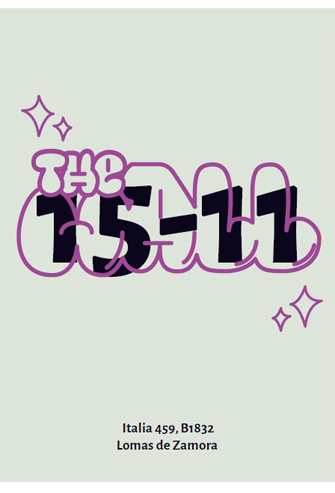
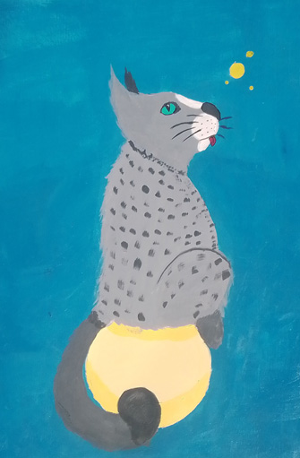
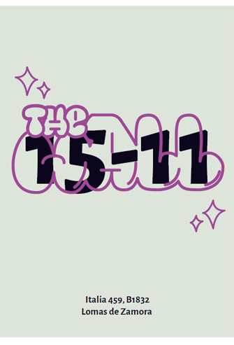
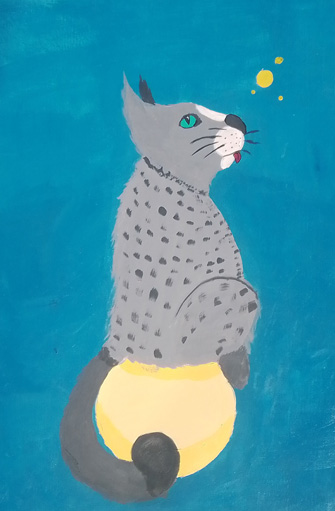

Perfil Profesional:
Estudiante de la carrera de Licenciatura en Diseño y Comunicación visual con conocimientos básicos sobre el diseño y la utilización de programas de Adobe como el Illustraitor, Photoshop, etc. Con disposición de seguir aprendiendo con la obtención de experiencia y trabajar.
Experimentado en participación en equipos organizados, no tan organizados y desastrosos pero logrando cumplir con el objetivo en cuestión.
Formación Académica:
Secundario completo
Licenciatura en Diseño y comunicación visual.
Universidad Nacional de Lanús. 2018- Actualidad
Informatica
Microsoft Office a nivel usuario avanzado
Programas específicos:
- Photoshop Nivel medio
- Illustraitor Nivel medio
- InDesing Nivel medio
Algunos de mis trabajos:

 


